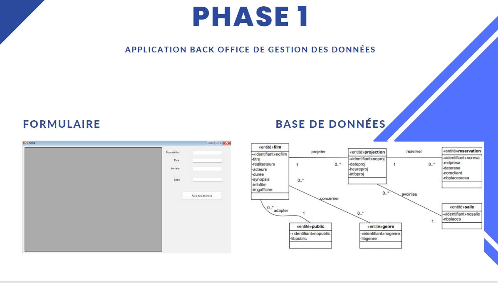
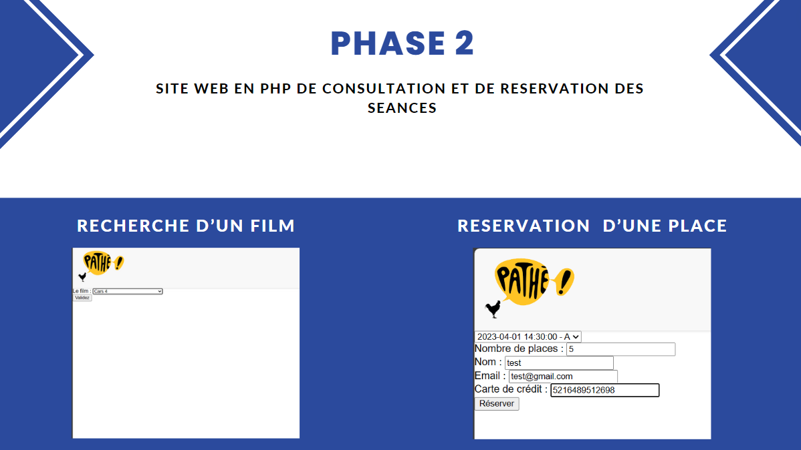

ici nous pouvons voir le formulaire ainsi que la base de données de la phase 1 du projet, dans lequel il est possible d'insérer un film ainsi que de lui atttribuer une salle.

Dans la phase 2 il est posssible de pouvoir rechercher un film sur un site en ligne ainsi que de pouvoir faire une reservation de salle tous ceci sur un site en ligne.

Le projet était plutôt compliqué surtout au niveau du css qui ne fonctionne pas mais nous à quand apporter des connaissances Suite à ce projet professionnel effectué en cours avec l’aide de la documentation et de nos connaissances actuel j’ai pu apprendre l’existence de différente bibliothèque php tel que fpdf afin de fournir un pdf pour le ticket de réservation de film tout en mettant en lien la première partie de c# pour le document de projection et une découverte du fonctionnement du système htaccess et htpasswd que je n’avais aucune connaissance de son existence, un libre développement poussé du code css ou encore php qui permet de pousser notre créativité et notre lien d'équipe via les équipes de deux depuis le début du projet